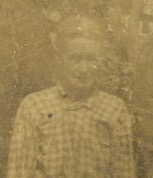
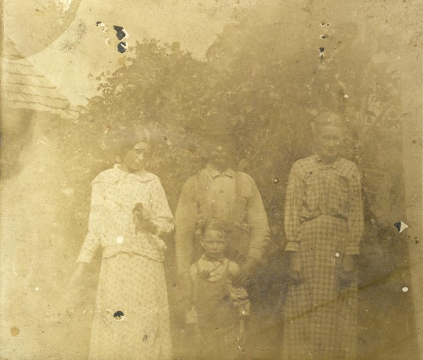

Nancy T. Jewell
1854–1918

Life Events
Born: May 4, 1854 — Clinch, Georgia, United States
Died: October 30, 1918 — Clinch, Georgia, United States
Family
Spouse:
Children
Military Service
No military service information has been added.
Biography
Biography information has not yet been added.
Photos

Sources
-
1886 Marriage License and Certificate — Thomas L. Herrin and Nancy Jewell
Type: MarriageOriginal marriage license and certificate documenting the marriage of Thomas L. Herrin and Nancy Jewell on October 13, 1886, in Clinch County, Georgia. The marriage license was issued October 12, 1886, by M. S. Corbitt, Ordinary. The ceremony was performed by David A. McDaniel, Minister of the Gospel. Nancy Jewell was Thomas Levi Herrin's second wife.
Location: Clinch County, Georgia
Supports: Thomas L. Herrin married Nancy Jewell on October 13, 1886, The marriage occurred in Clinch County, Georgia, The marriage license was issued October 12, 1886, The ceremony was performed by David A. McDaniel